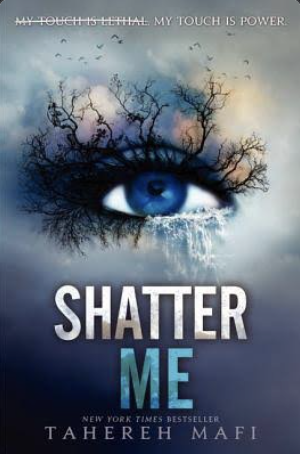
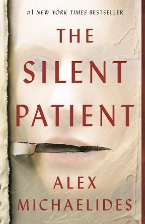
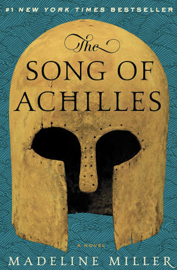

Tracking the books I've read in 2023
Tomorrow and Tomorrow and Tomorrow by Gabrielle Zevin
| Title | Author | Date Started | Date Finished | Rating | |
|---|---|---|---|---|---|
|  | Shatter Me | Tahereh Mafi | 12/27/22 | 02/03/23 | |
| Review: Shatter Me was a middle-school favorite of mine. The third in the series, Ignite Me, has a long-standing title of my all-time favorite book. In order to launch myself back into my love of reading, I wanted to start with a book I knew I loved, I knew would be easy and quick to read, and one that I did not have to process any new information, but simply just get back into the flow of reading a book. Shatter Me itself is a dystopian/fantasy/romance young adult novel that checked every box for a book I wanted when I was 12. Though the 17-year-old protagonist is far less relatable and idolizable at my old age of 21, there remains a soft spot in my heart for this book and Mafi's characters and romance plot. | |||||
|  | Silent Patient | Alex Michaelides | 02/03/2023 | 02/17/2023 | |
| Review: Silent Patient had been sitting on my shelves since last summer, when two of my friends had both read it and raved about it (and I'm not quite sure who the copy belongs to at this point). They both focused on the plot twist at the end, which was unlike any they'd read before. After reigniting my love of reading, this was next on my TBR list. It started off slowly, with the narrator, Theo, becoming the psychotherapist for Alicia, a mental institution patient, admitted for murdering her husband and never speaking another word. The story progresses and shows Theo's personal life, as well as Alicia's in the form of journal entries. There were small twists, and after reading each of these, I thought to myself, slightly disappointed, "Was that it?" When it was it, I was absolutely dumbfounded. I have never prided myself on predicting major plot points, and I finished the book in awe of how shocked I was, and reconsidered the entire book afterwards. The ending felt somewhat rushed after that, hence only 4/5 stars, but for how unexpected the twist was, I would recommend Silent Patient to anyone who is willing to put in the time to have their mind blown. | |||||
|  | The Song of Achilles | Madeline Miller | 02/17/2023 | 02/28/2023 | |
| Review: I purchased a copy of The Song of Achilles in Aix-en-Provence, France, while I was studying abroad there fall of 2021. I started it, briefly, and then put it aside until about a year and a half later. After the thrill of Silent Patient, I wanted a change of pace. I'd heard that The Song of Achilles was devastating, and that everyone who read it sobbed afterwards, so I thought it would do the trick. It absolutely did. Miller's world-building was slow but thorough, and the writing style changes as the narrator, Patroclus, ages from 9 years old to 27. It's a love story, and a war story, and devastatingly crushing and touching by the end. Like Silent Patient, I knew it was going to end sadly, and every time there was a sad plot point, I thought, "Is that what everyone is crying over?" Then, after reading the final page of the book, the tears started and continued intermittently for the rest of the afternoon. | |||||